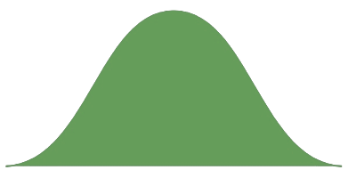

{% if site.google_analytics and jekyll.environment == 'production' %}
{% include analytics.html %}
{% endif %}

<div class="container">
  <link rel="stylesheet" href="assets/css/stor-focal.css"></link>
  <script src="assets/js/stor-focal.js"></script>
  <h1>Stór Focal</h1>
  <p>Cé mhéad focal s'agat?</p>

  <div class="game-box">
    <div id="bosca">
      <div id="focail-fheicte"></div>
      An dtuigeann tú cad a chiallaíonn leis an bhfocal:
      <div id="ceist-fhocal"></div>
      <div class="cnaipí">
        <div class="cnaipe-tuiscint" id="cnaipe-tuigim" onclick="tuigim()">Tuigim</div>
        <div class="cnaipe-tuiscint" id="cnaipe-ni-thuigim" onclick="niThuigim()">Ní Thuigim</div>
      </div>
      <p id="uimhir-focail"></p>
    </div>
    <div id="toradh">
      <div id="uimhir-thoradh">5000 Focal</div>
      <div id="clogchuar">
        
        
      </div>
      <div class="bosca-teacs">
        <div class="páiste imeall">Íseal</div>
        <div class="páiste">Tá do thoradh níos fearr ná <span id="céatadán">50%</span> de dhaoine</div>
        <div class="páiste imeall">Ard</div>
      </div>
    </div>
    <div id="ag-ríomh">
      <span class="ag-lódáil"></span>
    </div>
  </div>

  <div id="conas">
    <h2>Conas a oibrítear an ríomh amach?</h2>
    <p>
      <h3><a href="https://zipfslaw.org/2017/10/31/estimate-your-vocabulary-size/">Dlí Zipf</a></h3>
      <p>Is <a href="https://ga.wikipedia.org/wiki/Dl%C3%AD_Zipf">dlí eimpíreach</a> é Dlí Zipf. Tá minicíocht
        bhainteach le gach aon fhocal a léirigh chomh minic a úsáidtear na focail. Faightear claonadh amach
        dá gcuirfeá na minicíochtaí in ord. Dá gcuirfeá focail níos annaimhe roimh an úsáideoir gheobhaidh
        tú amach amuigh is istigh faoi cé mhéad focal a aithníonn siad.</p>
      <h3>Liosta na Minicíochtaí</h3>
      <p>Thóg mé liosta na bhfocal agus a minicíochtaí i nGaeilge ó shuíomh Github Ollaimh Kevin Scannell.
         D'Fhuaigh mé na liostaí le chéile agus bhain mé na hainmfhocail dílis, giorrúcháin, iolraí, agus
         foirmeacha ginideach as an liosta.
      </p>
      <h3>Ag Fáil Sampla Amach as an Liosta</h3>
      <p>
        Leis an liosta cruthaithe faighimid sampla easpónantúil ón liosta, bunaithe ar a ráta meathlú.
      </p>
      <p></p>
      <h3>Meastachán Uasdealraitheachta na hEaspónantúile Dáilte</h3>
      <p>
        An rud ba dheacra i rith an tionscadail go raibh ríomh an stóir focail. Is fadhb dheacair i measc
        réimse na teangeolaíochta agus na socheolaíochta. Ní fhéidir leat uimhir bheacht a fháil ó chuile
        duine le cúpla ceist amháin. Chun an réiteach a bhaint amach tá freastalaí Python i Google Cloud ag rith
        agam atá ag baint úsáid as meastachán uasdealraitheachta ar dháileadh easpónantúil a fhaigh fad an stóir
        focail amach, agus na focail thuigthe agus a minicíochtaí curtha isteach sa ríomh.
      </p>
      <br></br>
    </p>
  </div>
  <div class="liosta">
    <p>Stair na Leaganacha</p>
    <ul>
      <li>1.0.0 - 2024/01/20 - An chéad leagan foilsithe</li>
      <li>1.0.1 - 2024/01/21 - Leagan móibíleach</li>
    </ul>
  </div>
  <div class="liosta">
    <p>LE DÉANAMH</p>
    <ul>
      <li>Úsáid na comhchiallaigh agus na frithchiallaigh chun tuiscint níos beaichte a fháil ar na focail</li>
    </ul>
  </div>

  <p>
    Mo bhuíochas leis an <a href="https://github.com/kscanne">Ollamh Kevin Scannell</a> as na <a href="https://github.com/kscanne/gaelspell">liostaí fhocail</a>
    agus le Dr Fred Farrell a chum an chuid is mó den <a href="https://github.com/fredfarrell/vocabsize">chód chun an meastachán uasdealraitheachta a dhéanamh 8 mbliain ó shin</a>
  </p>
</div>